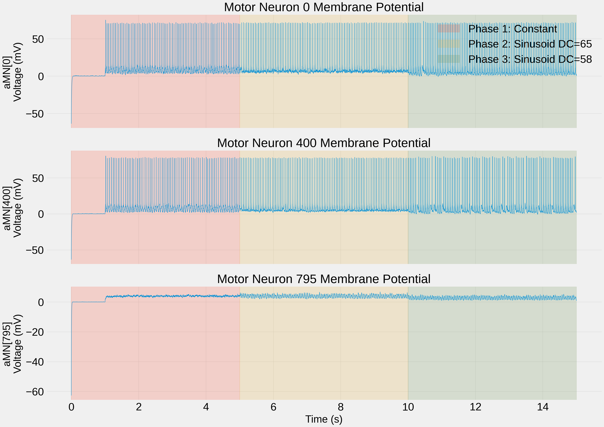
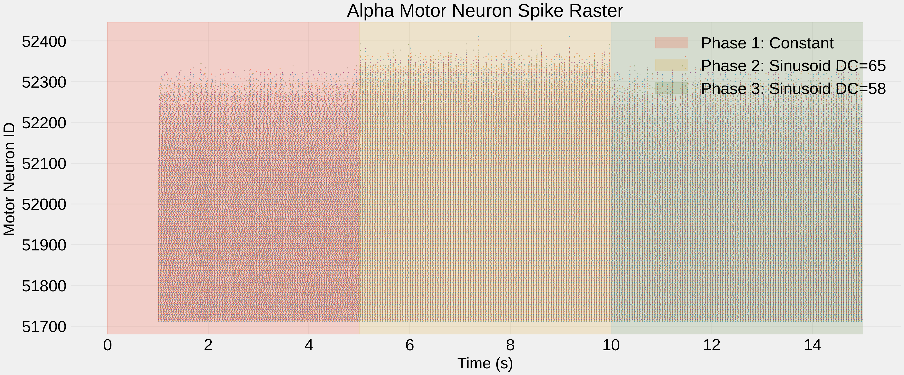
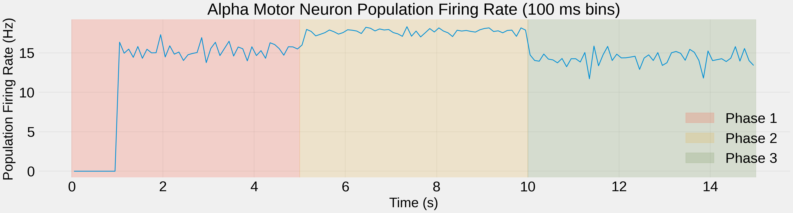

Note
Go to the end to download the full example code.
Load and Analyze Membrane Potentials and Spike Trains#
This example demonstrates post-simulation analysis of the Watanabe and Kohn (2015) spinal network model. It shows how to load chunked simulation data, convert it to NEO format, and analyze membrane potentials, spike trains, and population dynamics.
Note
Analysis workflow:
Load simulation parameters from previous run
Convert chunked data to NEO Block format (compatible with all analysis tools)
Analyze membrane potentials for representative motor neurons
Generate spike raster plots showing recruitment patterns
Compute population firing rates across simulation phases
Save visualizations for publication
Important
Prerequisites: This example requires simulation output from:
Run
03_10pct_mvc_simulation.pyfirstGenerates chunked data in
results/watanabe_chunks/Creates simulation parameters in
results/watanabe_simulation_params.pkl
Key Features:
Chunked data loading: Efficient memory usage for long simulations (15+ seconds)
NEO format conversion: Seamless compatibility with existing analysis pipelines
Three-phase analysis: Separate visualization of constant and modulated drive phases
Publication-quality plots: Membrane potentials, spike rasters, population rates
MyoGen Components Used:
convert_chunks_to_neo(): Converts chunked simulation data back into a standard NEO Block. This is the recommended way to load large simulation results.
External Libraries Used:
NEO (
neo.Block,neo.Segment,neo.SpikeTrain,neo.AnalogSignal): Standardized format for electrophysiology data. MyoGen uses NEO throughout for interoperability with analysis tools like Elephant, SpyKING CIRCUS, etc.joblib: Fast serialization for saving/loading large Python objects.
Data Structures Explained:
neo.Block: Top-level container holding multiple segments (experimental trials)neo.Segment: One recording session containing spike trains and analog signalsneo.SpikeTrain: Spike times for one neuron with metadata (units, t_stop, etc.)neo.AnalogSignal: Continuous data (e.g., membrane potential) with sampling rate
Use Case: Analyze motor unit recruitment, synchronization, and firing patterns to validate model predictions against experimental data from Watanabe and Kohn (2015).
Workflow Position: Step 4 of 6
Next Step: Run 05_compute_force_from_spinal_network.py to generate force output.
Import Libraries#
from pathlib import Path
import joblib
import matplotlib.pyplot as plt
import numpy as np
from myogen.utils.continuous_saver import convert_chunks_to_neo
plt.style.use("fivethirtyeight")
# Get colors 1, 2, 3 from the style color cycle for the three phases
phase_colors = plt.rcParams["axes.prop_cycle"].by_key()["color"][1:4]
Load Simulation Parameters#
Load the parameters from the simulation to ensure analysis matches the actual run
try:
_script_dir = Path(__file__).parent
except NameError:
_script_dir = Path.cwd()
results_path = _script_dir / "results"
params_file = results_path / "watanabe_simulation_params.pkl"
if not params_file.exists():
raise FileNotFoundError(
f"Simulation parameters file not found: {params_file}\n"
"Please run 03_10pct_mvc_simulation.py first to generate the simulation data."
)
sim_params = joblib.load(params_file)
segment_duration__s = sim_params["segment_duration__s"]
tstop__ms = sim_params["tstop__ms"]
dt__ms = sim_params["dt__ms"]
print("=" * 70)
print("SIMULATION PARAMETERS")
print("=" * 70)
print(f"Segment duration: {segment_duration__s} s")
print(f"Total duration: {tstop__ms / 1000} s ({tstop__ms} ms)")
print(f"Timestep: {dt__ms} ms")
print(f"Motor neurons: {sim_params['naMN']}")
# Calculate phase boundaries
phase1_end = segment_duration__s
phase2_end = 2 * segment_duration__s
phase3_end = 3 * segment_duration__s
======================================================================
SIMULATION PARAMETERS
======================================================================
Segment duration: 5 s
Total duration: 15.0 s (15000.0 ms)
Timestep: 0.025 ms
Motor neurons: 800
Load Data as NEO Block#
This is the RECOMMENDED approach - converts chunks to a NEO Block that’s identical in structure to what SimulationRunner.run() returns
chunks_path = results_path / "watanabe_chunks"
print("=" * 70)
print("LOADING SIMULATION DATA AS NEO BLOCK")
print("=" * 70)
print(f"Chunks directory: {chunks_path}\n")
# Convert chunks to NEO Block format (compatible with SimulationRunner output)
# All data (spikes + membrane potentials) is self-contained in the chunks
results = convert_chunks_to_neo(chunks_path)
print("\nNEO Block loaded successfully!")
print(f"\tType: {type(results)}")
print(f"\tSegments: {len(results.segments)}")
for seg in results.segments:
print(
f"\t{seg.name}: {len(seg.spiketrains)} spike trains, "
f"\t{len(seg.analogsignals)} analog signals"
)
======================================================================
LOADING SIMULATION DATA AS NEO BLOCK
======================================================================
Chunks directory: /home/runner/work/MyoGen/MyoGen/examples/03_papers/watanabe/results/watanabe_chunks
Converting chunks to NEO Block format...
Loading spike data from: /home/runner/work/MyoGen/MyoGen/examples/03_papers/watanabe/results/watanabe_chunks/spikes.pkl
Duration: 14999.975000312128 ms
Timestep: 0.025 ms
Total chunks: 3
Adding spike trains...
Creating DD spike trains: 0%| | 0/400 [00:00<?, ?it/s]
Creating DD spike trains: 24%|██▎ | 94/400 [00:00<00:00, 934.03it/s]
Creating DD spike trains: 47%|████▋ | 188/400 [00:00<00:00, 928.66it/s]
Creating DD spike trains: 70%|███████ | 281/400 [00:00<00:00, 919.98it/s]
Creating DD spike trains: 94%|█████████▎| 374/400 [00:00<00:00, 915.68it/s]
DD: 400 spike trains
Creating IN spike trains: 0%| | 0/800 [00:00<?, ?it/s]
Creating IN spike trains: 7%|▋ | 54/800 [00:00<00:01, 530.84it/s]
Creating IN spike trains: 14%|█▎ | 108/800 [00:00<00:01, 530.52it/s]
Creating IN spike trains: 20%|██ | 163/800 [00:00<00:01, 535.90it/s]
Creating IN spike trains: 27%|██▋ | 217/800 [00:00<00:01, 505.95it/s]
Creating IN spike trains: 34%|███▎ | 268/800 [00:00<00:01, 490.02it/s]
Creating IN spike trains: 40%|███▉ | 318/800 [00:00<00:01, 480.85it/s]
Creating IN spike trains: 46%|████▌ | 367/800 [00:00<00:00, 479.18it/s]
Creating IN spike trains: 52%|█████▏ | 417/800 [00:00<00:00, 483.18it/s]
Creating IN spike trains: 58%|█████▊ | 467/800 [00:00<00:00, 486.23it/s]
Creating IN spike trains: 64%|██████▍ | 516/800 [00:01<00:00, 485.21it/s]
Creating IN spike trains: 71%|███████ | 565/800 [00:01<00:00, 471.87it/s]
Creating IN spike trains: 77%|███████▋ | 613/800 [00:01<00:00, 459.26it/s]
Creating IN spike trains: 82%|████████▎ | 660/800 [00:01<00:00, 406.58it/s]
Creating IN spike trains: 88%|████████▊ | 705/800 [00:01<00:00, 417.82it/s]
Creating IN spike trains: 94%|█████████▍| 753/800 [00:01<00:00, 433.53it/s]
IN: 800 spike trains
Creating aMN spike trains: 0%| | 0/673 [00:00<?, ?it/s]
Creating aMN spike trains: 15%|█▍ | 99/673 [00:00<00:00, 983.27it/s]
Creating aMN spike trains: 29%|██▉ | 198/673 [00:00<00:00, 980.02it/s]
Creating aMN spike trains: 44%|████▍ | 297/673 [00:00<00:00, 973.23it/s]
Creating aMN spike trains: 59%|█████▊ | 395/673 [00:00<00:00, 971.02it/s]
Creating aMN spike trains: 73%|███████▎ | 493/673 [00:00<00:00, 964.69it/s]
Creating aMN spike trains: 88%|████████▊ | 590/673 [00:00<00:00, 959.51it/s]
aMN: 673 spike trains
Loading and combining membrane data from 3 chunks...
aMN: Combining 160 neurons from 3 chunks...
Loading aMN chunks: 0%| | 0/3 [00:00<?, ?chunk/s]
Loading aMN chunks: 33%|███▎ | 1/3 [00:01<00:02, 1.48s/chunk]
Loading aMN chunks: 67%|██████▋ | 2/3 [00:03<00:01, 1.54s/chunk]
Loading aMN chunks: 100%|██████████| 3/3 [00:04<00:00, 1.55s/chunk]
Loading aMN chunks: 100%|██████████| 3/3 [00:04<00:00, 1.54s/chunk]
aMN: Creating analog signals...
Creating aMN signals: 0%| | 0/160 [00:00<?, ?signal/s]
Creating aMN signals: 22%|██▎ | 36/160 [00:00<00:00, 358.58signal/s]
Creating aMN signals: 45%|████▌ | 72/160 [00:00<00:00, 359.32signal/s]
Creating aMN signals: 68%|██████▊ | 108/160 [00:00<00:00, 357.89signal/s]
Creating aMN signals: 91%|█████████ | 145/160 [00:00<00:00, 359.57signal/s]
aMN: 160 analog signals created
NEO Block created successfully
Total segments: 3
NEO Block loaded successfully!
Type: <class 'neo.core.block.Block'>
Segments: 3
DD: 400 spike trains, 0 analog signals
IN: 800 spike trains, 0 analog signals
aMN: 673 spike trains, 160 analog signals
Analyze Membrane Potentials#
Access membrane potentials from NEO AnalogSignals
print("\n" + "=" * 70)
print("ANALYZING MEMBRANE POTENTIALS")
print("=" * 70)
# Find the aMN segment
aMN_segment = None
for seg in results.segments:
if seg.name == "aMN":
aMN_segment = seg
break
if aMN_segment and len(aMN_segment.analogsignals) > 0:
# Extract analog signals
analog_signals = aMN_segment.analogsignals
n_neurons = len(analog_signals)
# Get time vector from first signal
first_signal = analog_signals[0]
times_ms = first_signal.times.rescale("ms").magnitude
sampling_period = float(first_signal.sampling_period.rescale("ms"))
print("\nMembrane potential recording:")
print("\tPopulation: aMN (alpha motor neurons)")
print(f"\tRecorded neurons: {n_neurons}")
print(f"\tTime range: {times_ms[0]:.1f} - {times_ms[-1]:.1f} ms")
print(f"\tDuration: {(times_ms[-1] - times_ms[0]) / 1000:.1f} seconds")
print(f"\tSampling period: {sampling_period} ms")
print(f"\tSamples per neuron: {len(times_ms)}")
# Plot membrane potentials for early, middle, and late recruited neurons
fig, axes = plt.subplots(3, 1, figsize=(14, 10), sharex=True)
# Select neurons to plot
indices_to_plot = [0, n_neurons // 2, n_neurons - 1]
for ax, idx in zip(axes, indices_to_plot):
signal = analog_signals[idx]
neuron_id = signal.name # Actual neuron ID
voltage = signal.rescale("mV").magnitude.flatten()
ax.plot(times_ms / 1000.0, voltage, linewidth=0.5)
ax.set_ylabel(f"aMN[{neuron_id}]\nVoltage (mV)")
ax.set_title(f"Motor Neuron {neuron_id} Membrane Potential")
ax.grid(True, alpha=0.3)
# Highlight the three experimental phases
ax.axvspan(0, phase1_end, alpha=0.2, color=phase_colors[0], label="Phase 1: Constant")
ax.axvspan(
phase1_end,
phase2_end,
alpha=0.2,
color=phase_colors[1],
label="Phase 2: Sinusoid DC=65",
)
ax.axvspan(
phase2_end,
phase3_end,
alpha=0.2,
color=phase_colors[2],
label="Phase 3: Sinusoid DC=58",
)
if ax == axes[0]:
ax.legend(loc="upper right", framealpha=1.0, edgecolor="none")
axes[-1].set_xlabel("Time (s)")
plt.tight_layout()
plt.savefig(
chunks_path.parent / "watanabe_membrane_potentials.png", dpi=150, bbox_inches="tight"
)
print(f"\n(OK) Saved plot: {chunks_path.parent / 'watanabe_membrane_potentials.png'}")
plt.show()

======================================================================
ANALYZING MEMBRANE POTENTIALS
======================================================================
Membrane potential recording:
Population: aMN (alpha motor neurons)
Recorded neurons: 160
Time range: 0.0 - 15000.0 ms
Duration: 15.0 seconds
Sampling period: 0.025 ms
Samples per neuron: 600000
(OK) Saved plot: /home/runner/work/MyoGen/MyoGen/examples/03_papers/watanabe/results/watanabe_membrane_potentials.png
Analyze Spike Data Summary#
Print summary statistics for all neural populations
print("\n" + "=" * 70)
print("ANALYZING SPIKE DATA")
print("=" * 70)
# Print summary for all populations
for seg in results.segments:
if len(seg.spiketrains) > 0:
n_units = len(seg.spiketrains)
n_spikes = sum(len(st) for st in seg.spiketrains)
duration_s = float(seg.spiketrains[0].t_stop.rescale("s"))
print(f"\n\t{seg.name}:")
print(f"\t\tTotal units: {n_units}")
print(f"\t\tTotal spikes: {n_spikes}")
if duration_s > 0 and n_units > 0:
print(f"\t\tMean firing rate: {n_spikes / n_units / duration_s:.2f} Hz")
======================================================================
ANALYZING SPIKE DATA
======================================================================
DD:
Total units: 400
Total spikes: 203849
Mean firing rate: 33.97 Hz
IN:
Total units: 800
Total spikes: 1496488
Mean firing rate: 124.71 Hz
aMN:
Total units: 673
Total spikes: 148755
Mean firing rate: 14.74 Hz
Generate Spike Raster Plot#
Visualize spike timing across all motor neurons with phase highlighting
# Plot raster plot for aMN population
if aMN_segment and len(aMN_segment.spiketrains) > 0:
print("\n" + "=" * 70)
print("GENERATING SPIKE RASTER PLOT")
print("=" * 70)
fig, ax = plt.subplots(figsize=(14, 6))
# Extract spike times and IDs from NEO spike trains
for st in aMN_segment.spiketrains:
neuron_id = int(st.name)
spike_times_s = st.times.rescale("s").magnitude
if len(spike_times_s) > 0:
ax.scatter(
spike_times_s,
[neuron_id] * len(spike_times_s),
s=0.5,
alpha=0.5,
)
ax.set_xlabel("Time (s)")
ax.set_ylabel("Motor Neuron ID")
ax.set_title("Alpha Motor Neuron Spike Raster")
ax.grid(True, alpha=0.3)
# Highlight the three experimental phases
ax.axvspan(0, phase1_end, alpha=0.2, color=phase_colors[0], label="Phase 1: Constant")
ax.axvspan(
phase1_end, phase2_end, alpha=0.2, color=phase_colors[1], label="Phase 2: Sinusoid DC=65"
)
ax.axvspan(
phase2_end, phase3_end, alpha=0.2, color=phase_colors[2], label="Phase 3: Sinusoid DC=58"
)
ax.legend(loc="upper right", framealpha=1.0, edgecolor="none")
plt.tight_layout()
plt.savefig(chunks_path.parent / "watanabe_spike_raster.png", dpi=150, bbox_inches="tight")
print(f"(OK) Saved plot: {chunks_path.parent / 'watanabe_spike_raster.png'}")
plt.show()

======================================================================
GENERATING SPIKE RASTER PLOT
======================================================================
(OK) Saved plot: /home/runner/work/MyoGen/MyoGen/examples/03_papers/watanabe/results/watanabe_spike_raster.png
Analyze Population Firing Rate#
Compute and visualize population-level firing rate dynamics over time
if aMN_segment and len(aMN_segment.spiketrains) > 0:
print("\n" + "=" * 70)
print("GENERATING POPULATION FIRING RATE PLOT")
print("=" * 70)
fig, ax = plt.subplots(figsize=(14, 4))
# Collect all spike times
all_spike_times = []
for st in aMN_segment.spiketrains:
all_spike_times.extend(st.times.rescale("ms").magnitude)
all_spike_times = np.array(all_spike_times)
# Calculate population firing rate in 100 ms bins
bin_size_ms = 100
duration_ms = float(aMN_segment.spiketrains[0].t_stop.rescale("ms"))
bins = np.arange(0, duration_ms + bin_size_ms, bin_size_ms)
counts, _ = np.histogram(all_spike_times, bins=bins)
# Convert to firing rate (spikes/sec/neuron)
n_neurons = len(aMN_segment.spiketrains)
firing_rate = counts / (bin_size_ms / 1000.0) / n_neurons
bin_centers = (bins[:-1] + bins[1:]) / 2
ax.plot(bin_centers / 1000.0, firing_rate, linewidth=1)
ax.set_xlabel("Time (s)")
ax.set_ylabel("Population Firing Rate (Hz)")
ax.set_title(f"Alpha Motor Neuron Population Firing Rate ({bin_size_ms} ms bins)")
ax.grid(True, alpha=0.3)
# Highlight the three experimental phases
ax.axvspan(0, phase1_end, alpha=0.2, color=phase_colors[0], label="Phase 1")
ax.axvspan(phase1_end, phase2_end, alpha=0.2, color=phase_colors[1], label="Phase 2")
ax.axvspan(phase2_end, phase3_end, alpha=0.2, color=phase_colors[2], label="Phase 3")
ax.legend(framealpha=1.0, edgecolor="none")
plt.tight_layout()
plt.savefig(chunks_path.parent / "watanabe_firing_rate.png", dpi=150, bbox_inches="tight")
print(f"(OK) Saved plot: {chunks_path.parent / 'watanabe_firing_rate.png'}")
plt.show()

======================================================================
GENERATING POPULATION FIRING RATE PLOT
======================================================================
(OK) Saved plot: /home/runner/work/MyoGen/MyoGen/examples/03_papers/watanabe/results/watanabe_firing_rate.png
Save NEO Block for Future Use (OPTIONAL)#
# NOTE: Saving the full NEO Block is slow (~23 GB of data) and unnecessary
# since we can quickly regenerate it from chunks using convert_chunks_to_neo()
#
# If you really want to save it, uncomment below and use compress=0 for speed:
#
print("\nSaving NEO Block for future use...")
neo_output_path = chunks_path.parent / "watanabe_results_neo.pkl"
joblib.dump(results, neo_output_path, compress=0) # No compression = faster
print(f"(OK) NEO Block saved to: {neo_output_path}")
Saving NEO Block for future use...
(OK) NEO Block saved to: /home/runner/work/MyoGen/MyoGen/examples/03_papers/watanabe/results/watanabe_results_neo.pkl
Total running time of the script: (0 minutes 23.033 seconds)